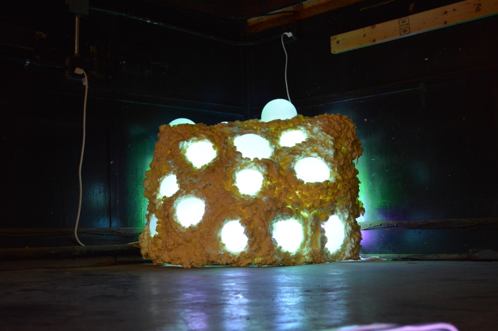
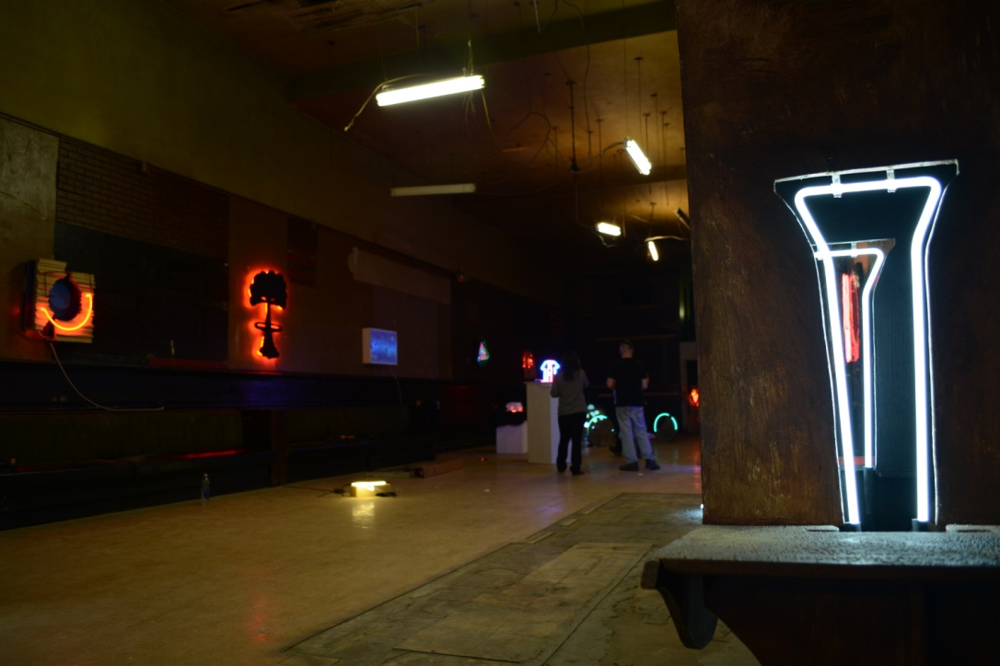

This was a selected sculpture that was displayed in the Norfolk Neon Festival in 2015. This project was inspired by a very unique fungus called the bleeding tooth fungus. I wanted to build a form that resembled the body of the fungus, but had glowing properties from the neon inside. The entire project was constructed from wood, chicken wire, insulation foam, handblown glass, and hand blown neon tubes.
During the Norfolk Neon Festival weekend, I was invited to do a live demonstration in the Chrysler Museum of Glass. We made a pretty kick ass robotic mermaid.
 